Озон: XML-файл для отгрузок
Кнопка на Отгрузке формирует XML-файл в формате Озон и прикрепляет его к документу в МойСклад.
1 Установите решение
Откройте каталог приложений в МойСклад, найдите «Озон: XML-файл для отгрузок» и нажмите «Установить».
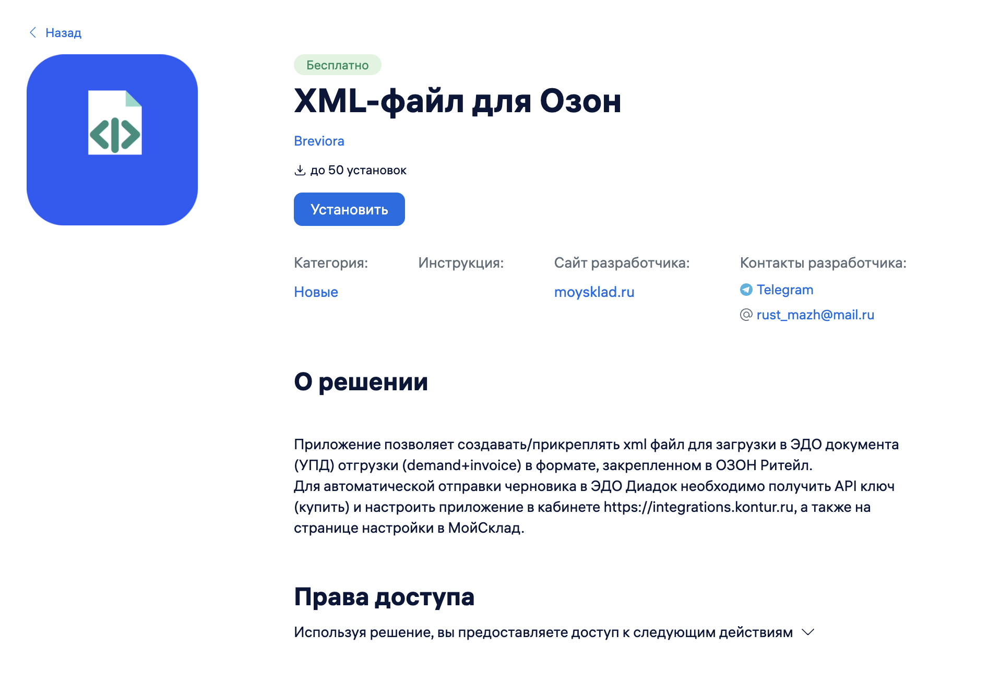
2 Подключите Диадок (опционально)
Чтобы файл дополнительно уходил в Контур.Диадок, в настройках решения заполните раздел «Приложение в Диадоке» и подключите Диадок. Без этого шага XML просто прикрепляется в МойСклад.
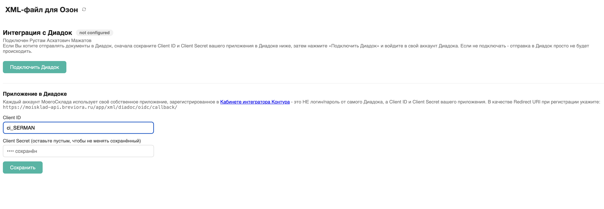
3 Нажмите кнопку на Отгрузке
Перейдите в раздел «Продажи → Отгрузки», выберите нужную отгрузку и нажмите «Решения» → «Создать». Решение соберёт XML, прикрепит его к документу и (если подключён Диадок) отправит туда же.
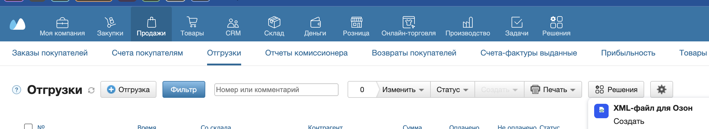
4 Готово
XML-файл прикреплён к отгрузке. Появится уведомление об успехе. Скачайте файл из вложений документа и передайте в Озон.
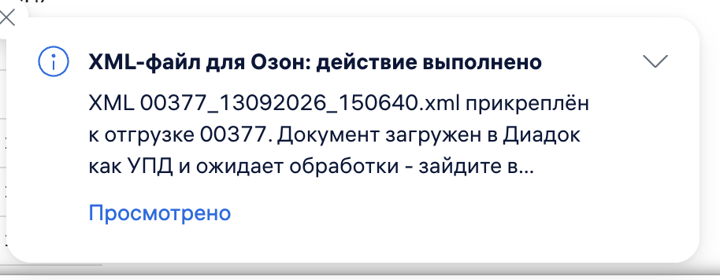
5 Что решение берёт из МойСклад
Чтобы Озон принял УПД, в МойСклад должны быть заполнены четыре поля:
- Штрихкод товара — в карточке товара, блок «Штрихкоды товара» (тип EAN13).
- Артикул OZON — дополнительное поле в карточке товара; рядом могут быть поля других маркетплейсов — решение читает только «Артикул OZON».
- Адрес доставки — поле в карточке отгрузки.
- Номер заказа Озон — поле «Комментарий» в карточке отгрузки.
Решение подставляет их в файл так:
Штрихкод и ID товара — в таблицу УПД
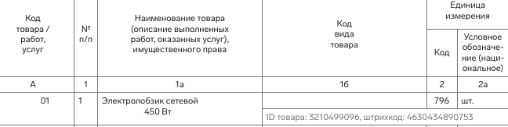
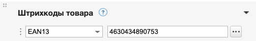
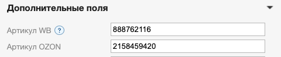
Адрес и номер заказа — в реквизиты УПД
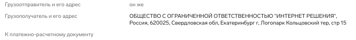
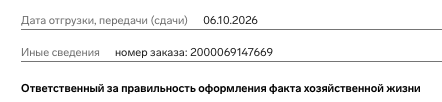
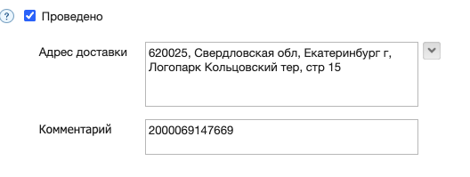
6 Как отключить Диадок (если был подключён)
Если вы подключали Диадок для автоотправки и хотите его отвязать, откройте настройки решения и нажмите «Отключить» в разделе «Диадок». XML-файл продолжит создаваться и прикрепляться к отгрузке — просто не будет уходить в Диадок.
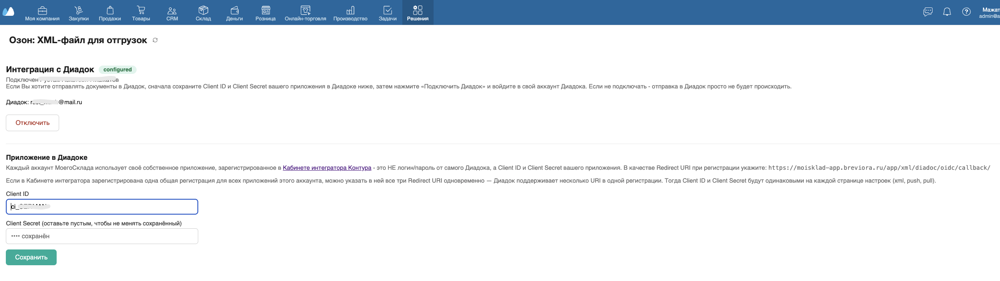